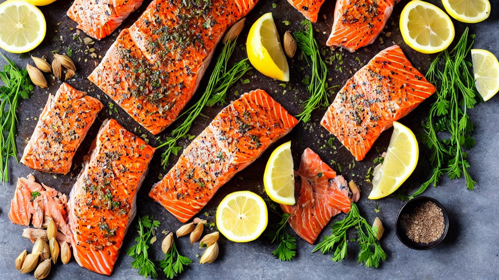
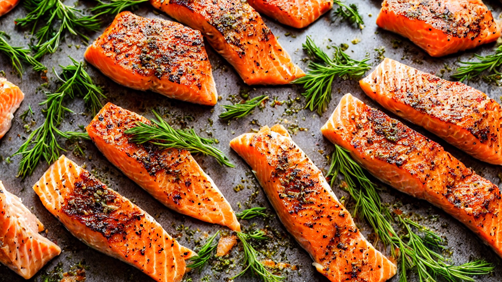
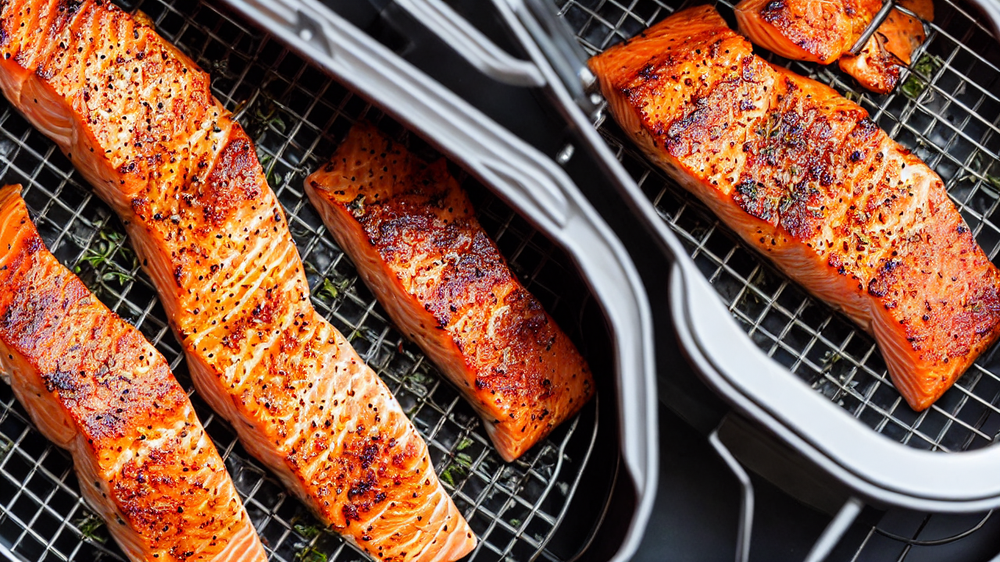
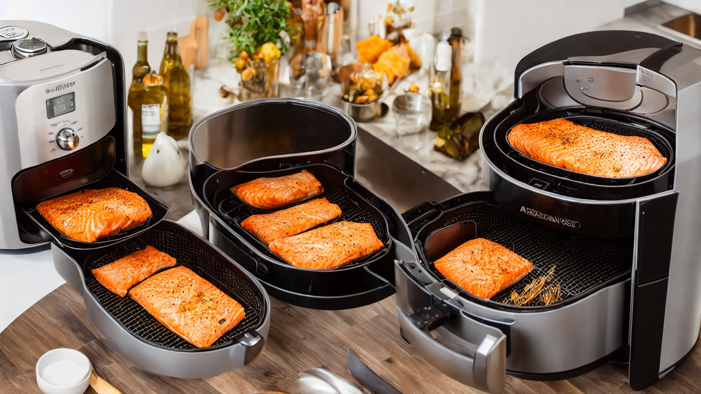
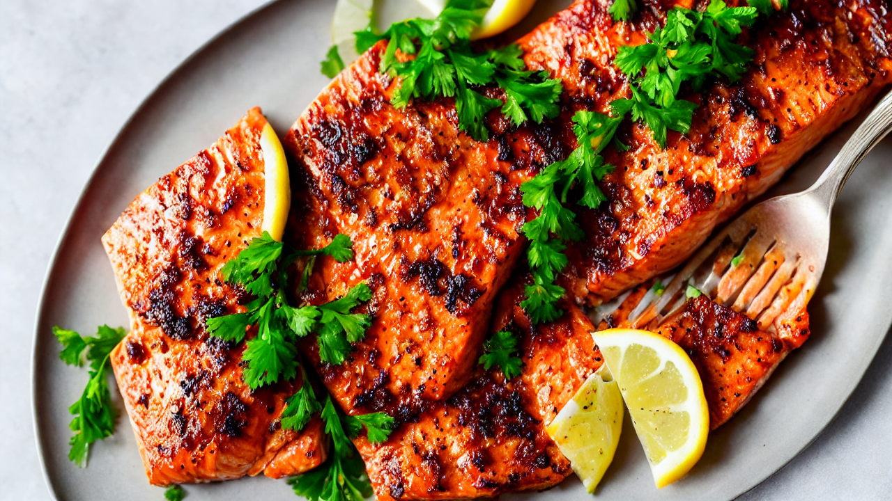
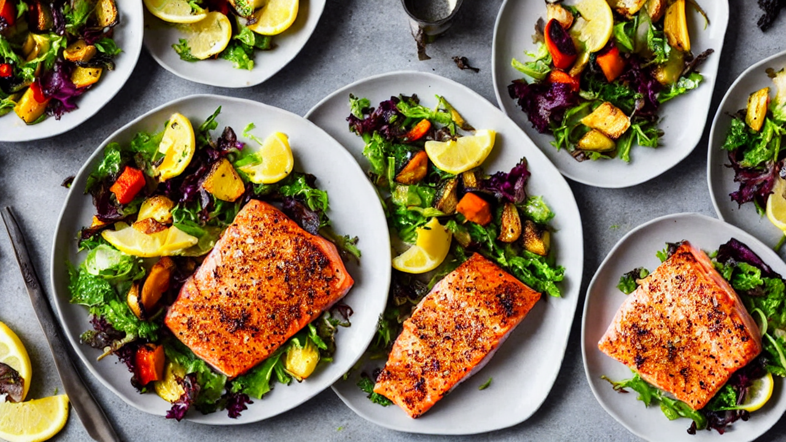

Air Fryer Salmon | Crispy Skin, Perfectly Cooked in 12 Minutes
The best Air Fryer Salmon recipe — crispy skin, flaky interior, and ready in just 12 minutes. Seasoned with lemon, garlic, and herbs for the easiest healthy dinner you'll make all week!
Ingredients
- 2 salmon fillets skin-on
- 1 tablespoon olive oil
- 2 cloves garlic minced
- 1 lemon
- dried dill
- paprika
- salt and pepper
- fresh parsley for garnish
Instructions

This Air Fryer Salmon comes out with the crispiest skin and the most perfectly flaky interior every single time. Twelve minutes from air fryer to plate. The easiest healthy dinner ever.

You'll need: 2 salmon fillets skin-on, 1 tablespoon olive oil, 2 cloves garlic minced, 1 lemon, dried dill, paprika, salt and pepper, and fresh parsley for garnish.

Pat the salmon fillets completely dry with paper towels. This is critical for crispy skin. Brush both sides with olive oil, then season with garlic, paprika, dill, salt, and pepper.

Preheat your air fryer to 400 degrees Fahrenheit. Place the salmon skin-side down in the basket. Make sure the fillets aren't touching for proper air circulation.

Air fry for 10 to 12 minutes depending on thickness. No flipping needed! The hot circulating air crisps the skin while keeping the inside perfectly moist and flaky.

The salmon is done when it flakes easily with a fork and the skin is golden and crispy. Squeeze fresh lemon juice over the top and garnish with fresh parsley and extra lemon wedges.

Serve with roasted vegetables, rice, or a fresh salad. This air fryer salmon is healthy, delicious, and so easy you'll make it every week. Twelve minutes to the best salmon of your life.